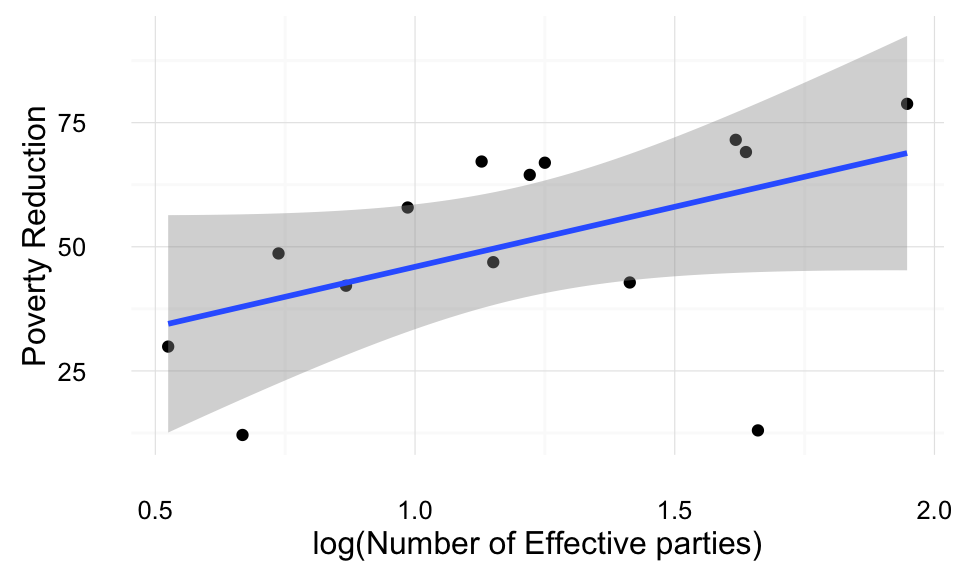
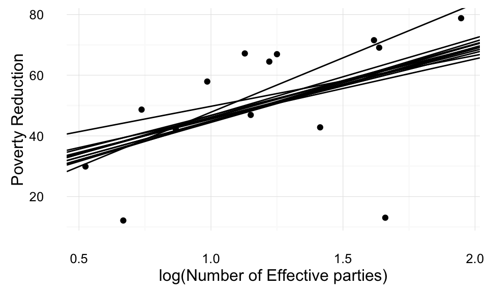
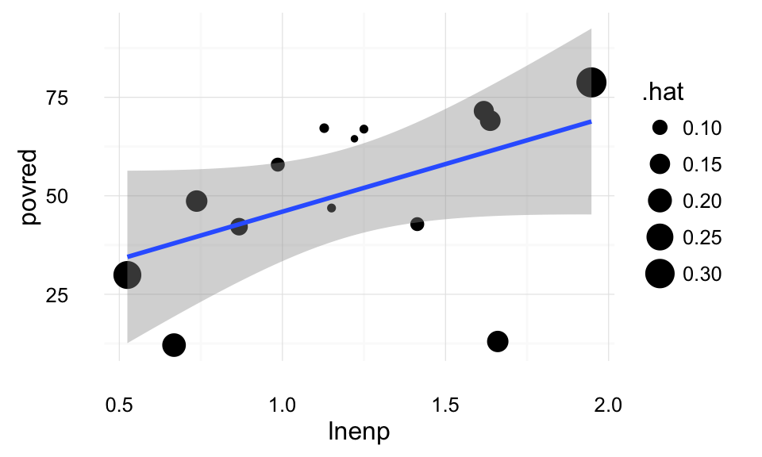
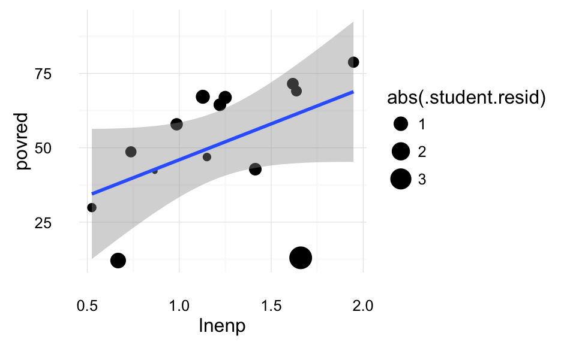
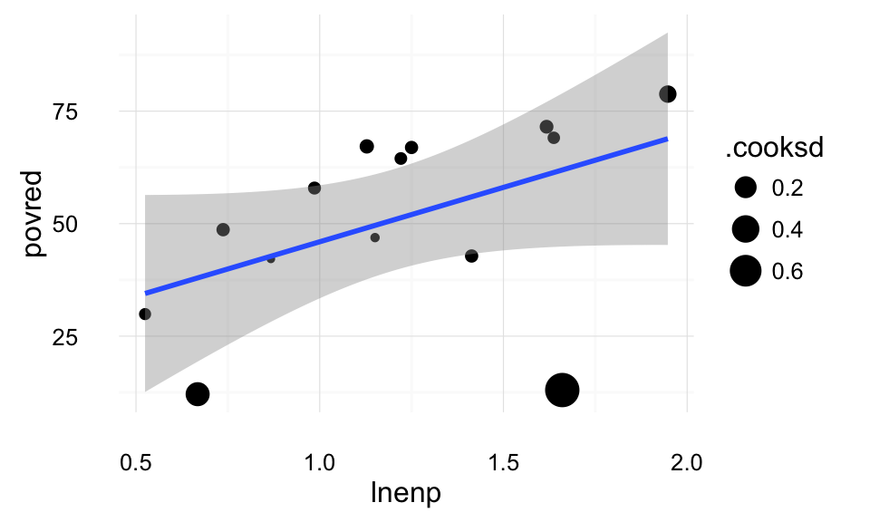
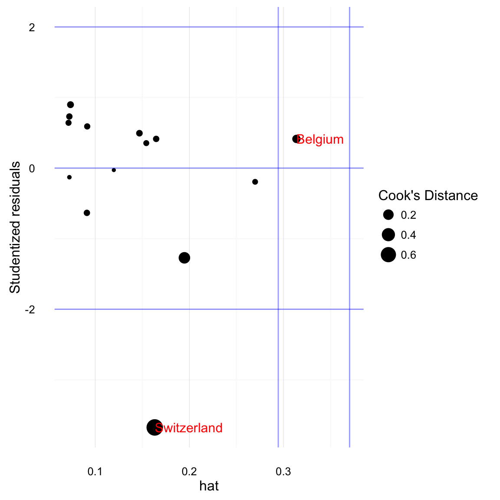
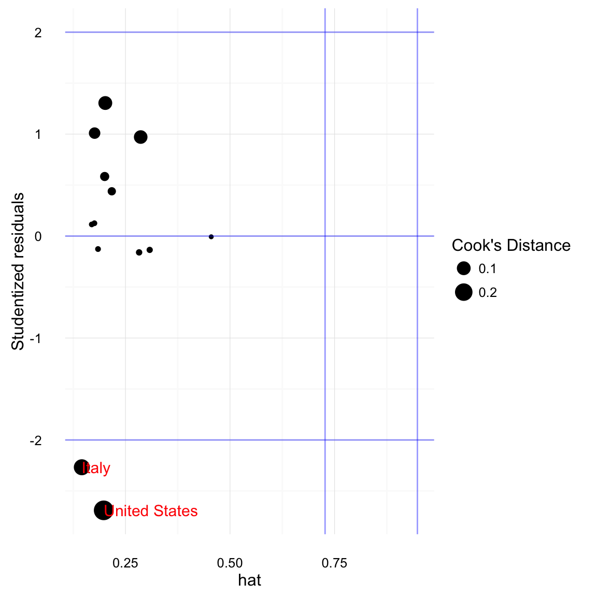
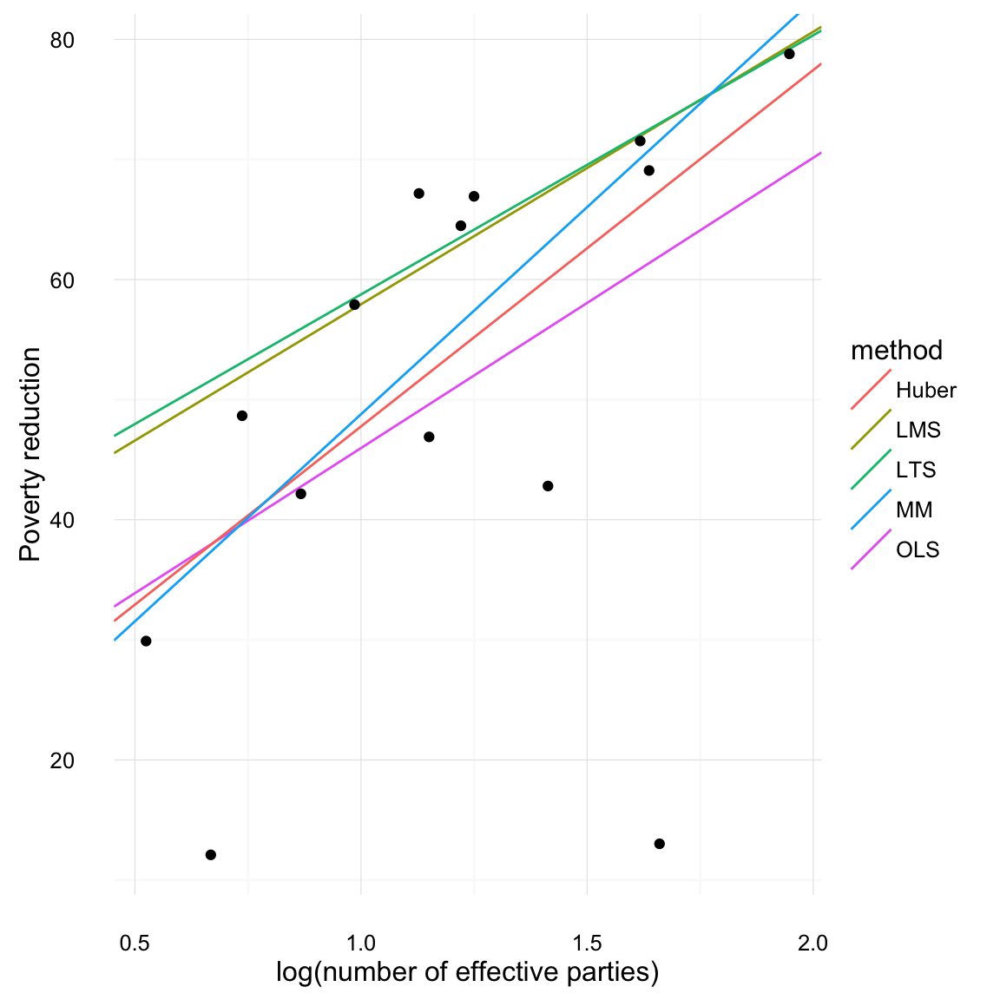

This example works through diagnostics for outliers, as well as methods of robust regression.
This example will use the following
library("MASS")
library("dplyr")
library("tidyr")
library("broom")
library("boot")
library("ggplot2")This ensures that we always use the select function from dplyr rather than the one from MASS.
select <- dplyr::selectFor the ggplot2 plots, we will the default theme settings here, so that we can reuse them for all plots, and also, if we feel like changing them, we only need to change them in one location.
theme_local <- theme_minimalThis is an example of from Iversen and Soskice (2003). That paper is interested in the relationship between party systems and redistributive efforts of the government.
The party system is measured using the effective number of parties; the redistributive efforts of the government is measured as the percent people lifted from poverty by taxes and transfers
First, let’s load the data
iver <- read.csv("http://uw-pols503.github.io/pols_503_sp15/data/iver.csv")
glimpse(iver)## Observations: 14
## Variables: 8
## $ cty (fctr) Australia, Belgium, Canada, Denmark, Finland, France...
## $ elec_sys (fctr) maj, pr, maj, pr, pr, maj, maj, pr, pr, pr, pr, unam...
## $ povred (dbl) 42.16, 78.79, 29.90, 71.54, 69.08, 57.91, 46.90, 42.8...
## $ enp (dbl) 2.38, 7.01, 1.69, 5.04, 5.14, 2.68, 3.16, 4.11, 3.49,...
## $ lnenp (dbl) 0.867100, 1.947340, 0.524729, 1.617410, 1.637050, 0.9...
## $ maj (int) 1, 0, 1, 0, 0, 1, 1, 0, 0, 0, 0, 0, 1, 1
## $ pr (int) 0, 1, 0, 1, 1, 0, 0, 1, 1, 1, 1, 0, 0, 0
## $ unam (int) 0, 0, 0, 0, 0, 0, 0, 0, 0, 0, 0, 1, 0, 0The variables of interest are lnemp (log effective number of parties), and povred (poverty reduction). Let’s plot the relationship between them
ggplot(iver, aes(x = lnenp, y = povred)) +
geom_point() +
geom_smooth(method = "lm") +
xlab("log(Number of Effective parties)") +
ylab("Poverty Reduction") +
theme_local()
What are influential points in a regression? They are points that How much would the regression line change if we deleted a the point and reran the regression?
iver_mod1 <- lm(povred ~ lnenp, data = iver)
iver_loo_regs <-
# Start with the iver data
iver %>%
# Group by country
group_by(cty) %>%
# For each country
# Run the regression without that country and store the coefficient values
do({
tidy(lm(povred ~ lnenp, data = filter(iver, cty != .$cty))) %>%
select(term, estimate)
}) %>%
# Reshape the dataset so that each coefficient is in a column
spread(term, estimate) %>%
# Calculate how much these slopes differ from the one with all the data
mutate(diff_slope = lnenp - coef(iver_mod1)["lnenp"],
abs_diff_slope = abs(diff_slope)) %>%
# Sort by the difference in slopes
arrange(- abs_diff_slope)
iver_loo_regs## Source: local data frame [14 x 5]
## Groups: cty [14]
##
## cty (Intercept) lnenp diff_slope abs_diff_slope
## <fctr> <dbl> <dbl> <dbl> <dbl>
## 1 Switzerland 11.96341 35.84168 11.67038124 11.67038124
## 2 United States 33.00804 16.74422 -7.42708138 7.42708138
## 3 Belgium 26.39803 19.48071 -4.69058913 4.69058913
## 4 Denmark 23.62155 21.91104 -2.26025292 2.26025292
## 5 United Kingdom 18.40976 26.35067 2.17937476 2.17937476
## 6 Canada 24.46021 22.32840 -1.84289747 1.84289747
## 7 Finland 23.22400 22.44224 -1.72905264 1.72905264
## 8 Italy 21.22614 25.50988 1.33858580 1.33858580
## 9 France 19.31982 25.43240 1.26110272 1.26110272
## 10 Norway 19.66602 24.78567 0.61437307 0.61437307
## 11 Netherlands 21.06469 23.82630 -0.34499536 0.34499536
## 12 Sweden 20.93623 24.04618 -0.12511217 0.12511217
## 13 Australia 21.96619 24.07283 -0.09847140 0.09847140
## 14 Germany 22.08429 24.10787 -0.06343038 0.06343038Switzerland looks particularly problematic. The effect of lnenp on povred is 7.
We could also plot these lines against the original data, to get a more intuitive sense of how much dropping one observation affects the regression slopes.
ggplot() +
geom_abline(data = iver_loo_regs, aes(intercept = `(Intercept)`,
slope = lnenp)) +
geom_point(data = iver, aes(x = lnenp, y = povred)) +
xlab("log(Number of Effective parties)") +
ylab("Poverty Reduction") +
theme_local()
Conveniently, in linear regression we can find which observations will have the largest influence on regression lines without rerunning the regression. Three statistics are of interest:
Use the broom function augment to add residuals and other diagnostic data to the original regression data. See help(influence) for functions to get these diagnostics using base R.
iver_mod1_aug <- augment(iver_mod1) %>%
mutate(cty = iver$cty)
glimpse(iver_mod1_aug)## Observations: 14
## Variables: 10
## $ povred (dbl) 42.16, 78.79, 29.90, 71.54, 69.08, 57.91, 46.90, 42...
## $ lnenp (dbl) 0.867100, 1.947340, 0.524729, 1.617410, 1.637050, 0...
## $ .fitted (dbl) 42.75835, 68.86916, 34.48280, 60.89432, 61.36904, 4...
## $ .se.fit (dbl) 6.692466, 10.833460, 10.047244, 7.413818, 7.595310,...
## $ .resid (dbl) -0.5983544, 9.9208441, -4.5828034, 10.6456800, 7.71...
## $ .hat (dbl) 0.11973167, 0.31374085, 0.26985506, 0.14693340, 0.1...
## $ .sigma (dbl) 20.20023, 19.87581, 20.13632, 19.89997, 20.04234, 1...
## $ .cooksd (dbl) 7.394393e-05, 8.763926e-02, 1.420959e-02, 3.058498e...
## $ .std.resid (dbl) -0.03297382, 0.61918852, -0.27729691, 0.59593691, 0...
## $ cty (fctr) Australia, Belgium, Canada, Denmark, Finland, Fran...Oddly, augment calculates the standardized residual, \[
\mathtt{.std.resid} = E'_i = \frac{E_i}{S_E \sqrt{1 - h_i}}
\] which divides by the regression residual standard error, which is itself a function of the residual of \(i\), \(S_E = \sqrt{\frac{\sum_j E_j}{n - k - 1}}\). What we want is the studentized residual which divides by the standard error of the regression calculated omitting observation \(i\): \[
\mathtt{.resid / .sigma * sqrt(1 - .hat)} = E^*_i = \frac{E_i}{S_{E_{(i)}} \sqrt{1 - h_i}}
\] where \(S_{E_(i)}\) is the standard error of the regression run without observation \(i\). It is called the Studentized residual, because it is distributed Student’s \(t\); the standardized residual is not. Add a new variable called .student.resid, which we can calculate using the residual (.resid), standard error of the regression that omits that observation (.sigma), and the hat value (.hat):
iver_mod1_aug <-
iver_mod1_aug %>%
mutate(.student.resid = .resid / .sigma * sqrt(1 - .hat))In base R, the function rstudent calculates the Studentized residuals, and rstandard calculates the standardized residuals:
setNames(rstudent(iver_mod1), iver$cty)## Australia Belgium Canada Denmark Finland
## -0.03157146 0.60253131 -0.26634629 0.57920127 0.41834057
## France Germany Italy Netherlands Norway
## 0.64999275 -0.13942917 -0.69795162 0.78818851 0.97001936
## Sweden Switzerland United Kingdom United States
## 0.69123825 -4.39123120 0.49519482 -1.57878326setNames(rstandard(iver_mod1), iver$cty)## Australia Belgium Canada Denmark Finland
## -0.03297382 0.61918852 -0.27729691 0.59593691 0.43350755
## France Germany Italy Netherlands Norway
## 0.66622163 -0.14550050 -0.71336214 0.80092982 0.97241536
## Sweden Switzerland United Kingdom United States
## 0.70678751 -2.76425506 0.51154375 -1.48890165This scatterplot weights observations by their hat score. Points further from the mean of lnenp have higher hat scores.
ggplot(data = iver_mod1_aug, aes(x = lnenp, y = povred)) +
geom_point(mapping = aes(size = .hat)) +
geom_smooth(method = "lm") +
theme_local()
This scatterplot weights observations by their absolute Studentized residuals. Those observations furthest from the regression line and high hat values, have the highest residuals.
ggplot(data = iver_mod1_aug, aes(x = lnenp, y = povred)) +
geom_point(mapping = aes(size = abs(.student.resid))) +
geom_smooth(method = "lm") +
theme_local() Cook’s distance is a measure of the overall influence of points on the regression; the point’s effect on all the parameters. This plot weights points by their Cook’s distance. We can see that the two points on the bottom (Switzerland and the US) have the highest Cook’s distance.
ggplot(data = iver_mod1_aug, aes(x = lnenp, y = povred)) +
geom_point(mapping = aes(size = .cooksd)) +
geom_smooth(method = "lm") +
theme_local()
A standard plot to assess outliers is the Influence Plot. The x-axis is hat scores, the y-axis is Studentized residuals. The points are sized by Cook’s Distance. Rules of thumb lines are drawn at -2 and 2 for Studentized residuals, and \(\bar{h} + 2 sd(h)\) and \(\bar{h} + 3 sd(h)\) for hat scores.
ggplot() +
geom_point(data = iver_mod1_aug,
mapping = aes(x = .hat, y = .student.resid, size = .cooksd)) +
# add labels to points, but only those points that are flagged as outliers
# for at least one of the diagnostics considered here
geom_text(data =
filter(iver_mod1_aug,
.cooksd > 4 / iver_mod1$df.residual
| abs(.student.resid) > 2
| .hat > mean(.hat) + 2 * sd(.hat)),
mapping = aes(x = .hat, y = .student.resid, label = cty),
hjust = 0, size = 4, colour = "red") +
geom_hline(data = data.frame(yintercept = c(-2, 0, 2)),
mapping = aes(yintercept = yintercept),
colour = "blue", alpha = 0.4) +
geom_vline(data = data.frame(xintercept = mean(iver_mod1_aug$.hat) +
sd(iver_mod1_aug$.hat) * c(2, 3)),
mapping = aes(xintercept = xintercept),
colour = "blue", alpha = 0.4) +
xlab("hat") +
ylab("Studentized residuals") +
scale_size_continuous("Cook's Distance") +
theme_local()
Instead of a plot, we could find the id Observations with high Cook’s distance (greater than \(4 / (n - k - 1)\)):
filter(iver_mod1_aug, .cooksd > (4 / iver_mod1$df.residual)) %>%
select(cty, .cooksd, lnenp)## cty .cooksd lnenp
## 1 Switzerland 0.745124 1.66013Observations with high hat scores (greater than 2 standard deviations than the mean hat score):
filter(iver_mod1_aug, .hat > mean(.hat) + 2 * sd(.hat)) %>%
select(cty, .hat, lnenp)## cty .hat lnenp
## 1 Belgium 0.3137408 1.94734Observations with high Studentized residuals (+/- 2):
filter(iver_mod1_aug, abs(.student.resid) > 2) %>%
select(cty, .student.resid, lnenp)## cty .student.resid lnenp
## 1 Switzerland -3.674577 1.66013Or combine these,
filter(iver_mod1_aug,
abs(.student.resid) > 2 |
.hat > mean(.hat) + 2 * sd(.hat) |
.cooksd > 4 / iver_mod1$df.residual) %>%
select(cty, .cooksd, .hat, .student.resid, lnenp)## cty .cooksd .hat .student.resid lnenp
## 1 Belgium 0.08763926 0.3137408 0.4134926 1.94734
## 2 Switzerland 0.74512398 0.1632012 -3.6745770 1.66013Also see influencePlot in car, and influencePlot in simcf for other implementations of this plot type. One feature of those implementations is that they allow for the ability to identify the points on the plot.
Now that we’ve identified Switzerland as a problematic point, the question is what to do about it. Checking the Switzerland data, it appears that it is correct and is not the result of data entry issues. In general, we should avoid dropping points. Perhaps the issue is that we have not accounted for different electoral systems. Let’s try including
iver_mod2 <- lm(povred ~ lnenp + elec_sys, data = iver)
iver_mod2##
## Call:
## lm(formula = povred ~ lnenp + elec_sys, data = iver)
##
## Coefficients:
## (Intercept) lnenp elec_syspr elec_sysunam
## 17.658 26.693 9.221 -48.952iver_mod2_aug <- augment(iver_mod2) %>%
mutate(.student.resid = .resid / (.sigma * sqrt(1 - .hat)),
cty = iver$cty)However, by including a categorical variable for electoral system in which Switzerland is the only country with a unanamity government, we are effectively dropping Switzerland from the regression. This means that we cannot calculate Cook’s distance or studentized residuals, or hat scores for Switzerland since a regression estimated without switzerland cannot estimate a coefficient for the unam category, since Switzerland is the only member of that category.
filter(iver_mod2_aug,
abs(.student.resid) > 2 |
.hat > mean(.hat) + 2 * sd(.hat) |
.cooksd > 4 / iver_mod1$df.residual) %>%
select(cty, .cooksd, .hat, .student.resid, lnenp)## cty .cooksd .hat .student.resid lnenp
## 1 Italy 0.1548996 0.1455977 -2.267585 1.413420
## 2 Switzerland NaN 1.0000000 -Inf 1.660130
## 3 United States 0.2749067 0.1978831 -2.690288 0.667829But now that we’ve ignored Switzerland, both Italy and the United States seem to be influential. This is because now that there are fewer observations per group, in some sense it is easier for observations to be influentia. But, although the US and Italy have high studentized residuals, neither of them exceed the rule of thumb for Cooks distance.
filter(iver_mod2_aug,
.cooksd > 4 / iver_mod1$df.residual) %>%
select(cty, .cooksd, .hat, .student.resid, lnenp)## [1] cty .cooksd .hat .student.resid
## [5] lnenp
## <0 rows> (or 0-length row.names)ggplot() +
geom_point(data = filter(iver_mod2_aug, .cooksd < Inf),
mapping = aes(x = .hat, y = .student.resid, size = .cooksd)) +
# add labels to points, but only those points that are flagged as outliers
# for at least one of the diagnostics considered here
geom_text(data =
filter(iver_mod2_aug,
.cooksd > 4 / iver_mod2$df.residual
| abs(.student.resid) > 2
| .hat > mean(.hat) + 2 * sd(.hat),
.cooksd < Inf),
mapping = aes(x = .hat, y = .student.resid, label = cty),
hjust = 0, size = 4, colour = "red") +
geom_hline(data = data.frame(yintercept = c(-2, 0, 2)),
mapping = aes(yintercept = yintercept),
colour = "blue", alpha = 0.4) +
geom_vline(data = data.frame(xintercept = mean(iver_mod2_aug$.hat) +
sd(iver_mod2_aug$.hat) * c(2, 3)),
mapping = aes(xintercept = xintercept),
colour = "blue", alpha = 0.4) +
xlab("hat") +
ylab("Studentized residuals") +
scale_size_continuous("Cook's Distance") +
theme_local()
Although there are still a few observations with large residuals, and with a small dataset, it is almost inevitable that some observations will have outsized influence on the results, from an outlier perspective the new model seems less problematic. However, we accomplished this at the cost of effectively ignoring Switzerland. The model is able to estimate how different Switzerland is from what would be predicted, but by including a dummy variable that is only 1 for Switzerland, we are treating Switzerland as sui generis. Also note, that although the category is called unam, it would be inappropriate to interpret it as the effect of that type of government since Switzerland is the only country in that category. We cannot separate the effect of the government type from all the other things that make Switzerland unique. It would be more appropriate to call it the “Switzerland” category in this instance.
Methods of dealing with outliers include robust and resistant regression methods. Many forms of robust regression are available through the **MASS* library functions lqs and rls. These include least median squares:
library("MASS")
iver_lms <- lqs(povred ~ lnenp, data = iver, method = "lms")
iver_lms## Call:
## lqs.formula(formula = povred ~ lnenp, data = iver, method = "lms")
##
## Coefficients:
## (Intercept) lnenp
## 35.25 22.69
##
## Scale estimates 4.919 3.558least trimmed squares
iver_lts <- lqs(povred ~ lnenp, data = iver, method = "lts")
iver_lts## Call:
## lqs.formula(formula = povred ~ lnenp, data = iver, method = "lts")
##
## Coefficients:
## (Intercept) lnenp
## 37.18 21.58
##
## Scale estimates 6.875 7.823M-method with Huber weighting,
iver_huber <- rlm(povred ~ lnenp, data = iver, method = "M",
scale.est = "Huber")
iver_huber## Call:
## rlm(formula = povred ~ lnenp, data = iver, scale.est = "Huber",
## method = "M")
## Converged in 10 iterations
##
## Coefficients:
## (Intercept) lnenp
## 18.09365 29.67556
##
## Degrees of freedom: 14 total; 12 residual
## Scale estimate: 14.7MM-methods,
iver_mm <- rlm(povred ~ lnenp, data = iver, method = "MM",
scale.est = "Huber")
iver_mm## Call:
## rlm(formula = povred ~ lnenp, data = iver, scale.est = "Huber",
## method = "MM")
## Converged in 6 iterations
##
## Coefficients:
## (Intercept) lnenp
## 14.29807 34.48933
##
## Degrees of freedom: 14 total; 12 residual
## Scale estimate: 12.6Now plot all of them together,
iver_line_compare <-
bind_rows(data_frame(method = "OLS",
intercept = coef(iver_mod1)["(Intercept)"],
slope = coef(iver_mod1)["lnenp"]),
data_frame(method = "LMS",
intercept = coef(iver_lms)["(Intercept)"],
slope = coef(iver_lms)["lnenp"]),
data_frame(method = "LTS",
intercept = coef(iver_lts)["(Intercept)"],
slope = coef(iver_lts)["lnenp"]),
data_frame(method = "Huber",
intercept = coef(iver_huber)["(Intercept)"],
slope = coef(iver_huber)["lnenp"]),
data_frame(method = "MM",
intercept = coef(iver_mm)["(Intercept)"],
slope = coef(iver_mm)["lnenp"])
)
print(iver_line_compare)## Source: local data frame [5 x 3]
##
## method intercept slope
## <chr> <dbl> <dbl>
## 1 OLS 21.79942 24.17130
## 2 LMS 35.25001 22.69176
## 3 LTS 37.18191 21.58035
## 4 Huber 18.09365 29.67556
## 5 MM 14.29807 34.48933ggplot() +
geom_abline(data = iver_line_compare,
mapping = aes(intercept = intercept, slope = slope,
colour = method)) +
geom_point(data = iver, mapping = aes(x = lnenp, y = povred)) +
scale_colour_discrete() +
xlab("log(number of effective parties)") +
ylab("Poverty reduction") +
theme_local()
Note that these robust and resistant estimators do no include standard errors. To get standard errors, we need to bootstrap these estimates. The following code uses the bootstrap function combined do to generate bootstraps; see this vignette. Then
iver %>%
bootstrap(5000) %>%
do({
mod <- lqs(povred ~ lnenp, method = "lms",
data = .)
data.frame(term = names(coef(mod)),
estimate = coef(mod))
}) %>%
group_by(term) %>%
summarise(mean = mean(estimate),
lb = quantile(estimate, 0.025),
ub = quantile(estimate, 0.975))## Source: local data frame [2 x 4]
##
## term mean lb ub
## <fctr> <dbl> <dbl> <dbl>
## 1 (Intercept) 41.18304 -64.68079 207.9342
## 2 lnenp 17.87506 -117.14091 119.6287We find that the standard errors are very large compared to those of the OLS.
sqrt(diag(vcov(iver_mod1)))## (Intercept) lnenp
## 16.15440 12.74855This makes LTS not particularly useful in small datasets.
This is alternative code to calculate the bootstrap of LTS using the boot package. boot is a more general and powerful method of bootstrapping, supporting many different sampling methods. However, it requires defining a function to calculate the statistic (in this case I write the function leasttrimmed), and does not return a data frame, but a special boot object.
run_lqs <- function(d, i, ...) {
coef(lqs(povred ~ lnenp, data = d, subset = i))
}
boot(iver[ , c("povred", "lnenp")], run_lqs, R = 1000)##
## ORDINARY NONPARAMETRIC BOOTSTRAP
##
##
## Call:
## boot(data = iver[, c("povred", "lnenp")], statistic = run_lqs,
## R = 1000)
##
##
## Bootstrap Statistics :
## original bias std. error
## t1* 37.18191 -6.348212 46.83936
## t2* 21.58035 3.203307 38.64660Adapted from an example in Christopher Adolph (Spring 2014), “Outliers and Robust Regression Techniques” [lecture slides]. http://faculty.washington.edu/cadolph/503/topic6.pw.pdf.